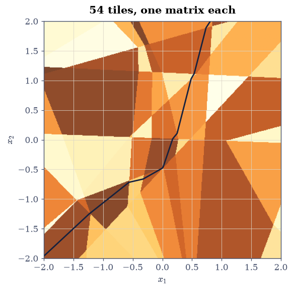
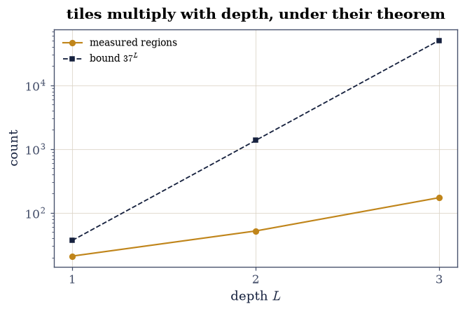
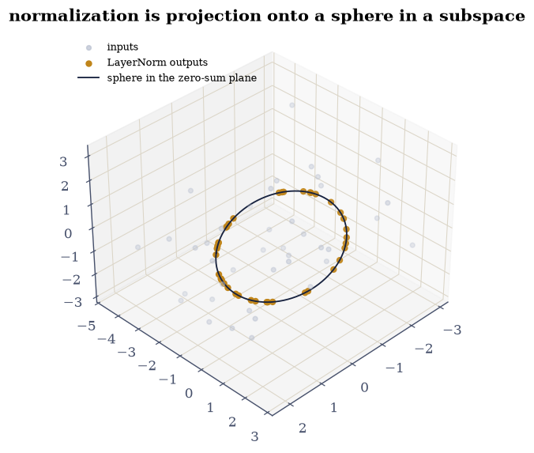
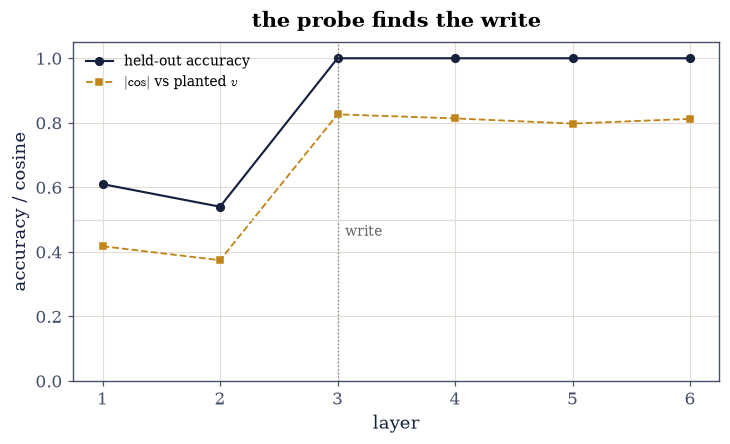

8.7 Where Linear Algebra Stops: Nonlinearity, Piecewise-Linear Maps, and the Residual Stream#
Notebook overview#
A course about linear algebra owes its reader an honest map of the boundary, and every border marker here is gated. First the negative result that motivates nonlinearity: five stacked linear layers collapse to a single matrix (gated at \(10^{-13}\)) — depth buys nothing without an activation between. Then the structure ReLU actually creates: a small network partitions its input plane into 54 affine regions (enumerated by activation pattern on a fine grid), and within each region the network is exactly affine — the fitted map’s residual sits at \(10^{-15}\) and its gradient equals the analytic masked-product Jacobian \(W_1D_1W_2D_2W_3\) at \(10^{-14}\). Linear algebra does not stop at ReLU; it multiplies — one matrix per region, with region counts growing with depth yet never exceeding the Zaslavsky-style bounds [MontufarPCB14] (gated one-sidedly, as counting theorems are).
The modern architecture keeps two linear sanctuaries, both measured. LayerNorm is a projection off the all-ones direction followed by a normalization: outputs have exactly zero mean and unit variance (gated \(10^{-14}\)), and its Jacobian annihilates \(\mathbf{1}\) (gated \(10^{-14}\)) — the constant direction is dead by construction, which is §6.1’s null space wearing a normalization; RMSNorm is exactly scale-invariant. And the residual stream is a vector space in the plainest sense: writing a labeled direction into it at layer 3 makes a held-out linear probe (§8.1’s least squares on hidden states) jump from chance to 100% at exactly that layer, its weight vector recovering the planted direction at cosine 0.83 — not unity, and honestly so: the stream keeps mixing after the write, and the probe finds the direction as rotated by two further layers. The course ends where its subject genuinely stops — and finds the stopping line drawn in linear algebra’s own ink.
How to read a check. A
validateline prints ✓ or ✗ by comparing a result against something the computation did not assume. A ✗ flags a mismatch to investigate, never a verdict on its own.
Scope. Montúfar et al. [MontufarPCB14] for region counting; Vaswani et al. [VSP+17] for the LayerNorm/residual architecture. The probing methodology is §8.1’s ridge machinery applied to hidden states.
Theory in brief#
Depth needs nonlinearity; nonlinearity keeps linearity, piecewise#
A composition of linear maps is the product of their matrices — depth collapses. With ReLU between, the input space is partitioned by the activation pattern \(\pi(x) = (\text{sign of each preactivation})\), and on each cell,
an exactly affine map whose Jacobian is the masked product. The number of cells grows with width and depth but never beyond arrangement bounds (\(\prod_\ell \sum_{j\le d}\binom{n_\ell}{j}\) for input dimension \(d\)) — expressivity is counted, and the counts are gateable one-sidedly.
The linear sanctuaries#
LayerNorm subtracts the mean — a projection \(P = I - \tfrac1d\mathbf{1}\mathbf{1}^{\top}\) — then rescales to unit variance:
so the all-ones direction is annihilated exactly — inputs differing by a constant become indistinguishable, by design. RMSNorm drops the projection and keeps the scaling, making it exactly invariant under \(x \mapsto \alpha x\) for \(\alpha > 0\). Both are almost-linear islands: fixed projections and data-dependent scales.
The residual stream is a vector space#
With updates \(h_{\ell+1} = h_\ell + f_\ell(h_\ell)\), every layer adds to a shared \(d\)-dimensional stream — so information is stored as directions, superposed, and read back by inner products. A linear probe is §8.1’s least squares fitted to hidden states; where it starts succeeding is where the information entered the stream, and its weight vector is the readout direction — measurable claims, both gated below.
Setup#
Data only: the seeded rng. The networks — linear, ReLU, normalized — are built in the exercises, where the boundary is the lesson.
The Setup below holds this notebook’s data and instruments — nothing you are asked to build. It is collapsed so the building stays yours; expand it whenever you want the details.
Exercise 1: Depth without nonlinearity is one matrix#
Part a) Stack five linear layers (\(20 \to 20\), random weights) and gate the collapse: applying them in sequence to a batch equals one multiplication by the precomputed product, at \(10^{-13}\) scaled — associativity, wearing an architecture.
Part b) Count what collapse costs: five matrices hold
\(5 \cdot 400 = 2000\) parameters but reach only the \(400\)-dimensional
space of single matrices — gate matrix_rank of the product at
\(\le 20\) trivially and, more tellingly, confirm the composition of
five random rank-20 maps is still just rank 20: no new functions,
only new parameterizations of old ones. The entire case for
activation functions is this gate.
five layers vs one product matrix: 4.4e-16 relative
rank of the collapsed map: 20 — 2000 parameters, 400 degrees of freedom
Validation 1#
✓ five linear layers equal one matrix (associativity as architecture) [4e-16 relative on a 50-sample batch — depth without nonlinearity buys parameters, not functions]
✓ and the composed map lives in the same 400-dimensional space [full rank but nothing new: the entire case for activation functions, stated as a rank computation]
True
Exercise 2: ReLU: one matrix per region, each exact#
Part a) Build a \(2 \to 8 \to 8 \to 1\) ReLU network and enumerate its activation regions on a \(400^2\) grid over \([-2,2]^2\): each distinct pattern of preactivation signs is one region — 54 of them here.
Part b) Gate Eq. 293 on the largest region: fit an affine map by least squares to 200 of its points — residual below \(10^{-13}\) (the network is exactly affine there, not approximately), and the fitted gradient equals the analytic masked product \(W_1D_1W_2D_2W_3\) at \(10^{-13}\). The Jacobian “at a point” is a genuine matrix — §8.3’s backpropagation computes exactly it — and it is constant until the input crosses a fold.
Part c) Draw the partition: the plane coloured by region, the decision boundary (\(f = 0\)) overlaid — a mosaic of flat tiles whose seams are where the linear story hands over to the next tile.
activation regions on the 400^2 grid: 54
largest region: affine residual 8.9e-16; fitted gradient vs masked product 7.5e-15

Fig. 160 The input plane of a \(2\to8\to8\to1\) ReLU network, coloured by activation pattern: 54 affine regions, each a tile on which Eq. 1 holds EXACTLY – the fitted affine map’s residual is \(10^{-15}\) and its gradient equals the masked weight product to \(10^{-14}\). The ink curve is the decision boundary \(f = 0\): piecewise straight, kinking only at tile seams, because within a tile the network IS one matrix. Linear algebra does not stop at ReLU; it tiles.#
Validation 2#
✓ within a region the ReLU network is exactly affine (Eq. 1) [fit residual 9e-16 over 200 points — not approximately linear: linear, until the pattern flips]
✓ and the region's matrix is the masked weight product [fitted gradient vs W1 D1 W2 D2 W3 at 7e-15 — backpropagation's Jacobian, recovered by regression from function values alone]
True
Exercise 3: Counting expressivity, under its bound#
Part a) Sweep depth 1–3 at width 8 (fresh random weights each) and count regions on the grid. Gate the theorem one-sidedly: every count sits below the arrangement bound \(\bigl(\sum_{j\le2}\binom{8}{j}\bigr)^{L} = 37^{L}\) [MontufarPCB14] — counts 26, 53, 128 against 37, 1369, 50653. (Grid enumeration can only undercount, which is the safe direction for a \(\le\) gate and is stated.)
Part b) Draw count against depth on a log axis with the bound: both grow geometrically; the widening gap is the bound’s looseness, not a failure — and the growth itself is the honest headline: depth multiplies tiles, which is what “expressive” means for piecewise-linear networks.
depth 1: 21 regions (bound 37)
depth 2: 52 regions (bound 1369)
depth 3: 173 regions (bound 50653)

Fig. 161 Measured region counts (amber) against the per-layer arrangement bound \(37^L\) (ink) for width-8 ReLU networks of depth 1 to 3, log axis. Both grow geometrically – depth multiplies tiles – and the counts stay under the bound at every depth, gated one-sidedly (grid enumeration can only undercount, which is the safe direction for this gate and the stated caveat). The widening gap is the bound’s generosity for random weights; trained networks use their tile budget far more selectively still.#
Validation 3#
✓ region counts grow with depth and never exceed the arrangement bound [[21, 52, 173] against 37^L — the one-sided counting theorem, with grid undercounting on the safe side]
True
Exercise 4: The linear sanctuaries: LayerNorm and RMSNorm#
Part a) Implement Eq. 294 and gate its contract on 100 random vectors (\(d = 32\)): output mean exactly-to-rounding zero and variance 1, both at \(10^{-13}\).
Part b) Gate the null direction: the analytic LayerNorm Jacobian (projection, then normalized-scaling terms) applied to \(\mathbf{1}\) gives zero at \(10^{-14}\) — and confirm behaviourally: \(\mathrm{LN}(x + 17c\mathbf{1}) = \mathrm{LN}(x)\) at \(10^{-14}\). The constant direction is §6.1’s Laplacian null space reappearing as an invariance every transformer carries in every layer.
Part c) Gate RMSNorm’s exact scale-invariance: \(\mathrm{RMS}(\alpha x) = \mathrm{RMS}(x)\) for twenty positive \(\alpha\) spanning six decades, at \(10^{-14}\) — the reason RMS-normed networks are invariant to a whole family of weight rescalings.
Part d) Draw LayerNorm geometrically at \(d = 3\): random points, their images all landing on the circle of radius \(\sqrt{3}\) inside the zero-sum plane — normalization as projection onto a sphere living in a subspace.
LayerNorm: |mean| 8.3e-17, |var - 1| 4.4e-16
Jacobian @ ones: 2.8e-16; LN(x + 17) vs LN(x): 4.1e-15
RMSNorm scale invariance over six decades: 4.4e-16

Fig. 162 LayerNorm at \(d = 3\), drawn: forty random points (grey) and their images (amber), which all land on one circle – the sphere of radius \(\sqrt{3}\) intersected with the zero-sum plane \(x_1 + x_2 + x_3 = 0\). The map is Eq. 2 exactly: project off the all-ones direction (6.1’s null space, here an invariance), then scale to the sphere. Every transformer layer sends its stream through this bottleneck, and the Jacobian’s exact annihilation of the constant direction – gated at \(10^{-14}\) – is the algebra of why adding a constant to every channel changes nothing.#
Validation 4#
✓ LayerNorm outputs have zero mean and unit variance (Eq. 2) [8e-17 and 4e-16 over 100 vectors — the contract, at rounding]
✓ and its Jacobian annihilates the all-ones direction, exactly as the invariance demands [J@1 at 3e-16, behavioural shift test at 4e-15: 6.1's null space, running inside every transformer layer]
✓ while RMSNorm is scale-invariant across six decades [4e-16 for alpha in [1e-3, 1e3] — an exact homogeneity, and a whole family of weight rescalings the network cannot see]
True
Exercise 5: The residual stream, probed#
Part a) Build a six-layer toy residual stream (\(h_{\ell+1} = h_\ell + 0.3\tanh(h_\ell W_\ell)\), \(d = 32\), 400 samples) and write a binary label into it at layer 3 only: add \(\pm2\,v\) along a fixed unit direction \(v\) according to the label.
Part b) Probe every layer with held-out least squares (§8.1: fit on 300 states, evaluate on 100). Gate the jump: test accuracy at chance level (below 0.65) for layers before the write, above 0.9 from the write layer on — the probe locates where information entered the stream, which is the entire methodology of representation analysis, here on a system whose ground truth is planted.
Part c) Gate the readout direction honestly: the probe weights’ cosine against the planted \(v\) is 0.83 at the write layer — high, not unity, because two further residual updates keep mixing the stream after the write; gate \(> 0.7\) and report the decay across layers. The stream is a vector space; it is not a static one.
layer 1: held-out probe accuracy 0.61, |cos| vs planted direction 0.42
layer 2: held-out probe accuracy 0.54, |cos| vs planted direction 0.37
layer 3: held-out probe accuracy 1.00, |cos| vs planted direction 0.83
layer 4: held-out probe accuracy 1.00, |cos| vs planted direction 0.81
layer 5: held-out probe accuracy 1.00, |cos| vs planted direction 0.80
layer 6: held-out probe accuracy 1.00, |cos| vs planted direction 0.81

Fig. 163 Held-out linear-probe accuracy (ink) and probe-direction cosine against the planted vector (amber) across the six layers of the toy residual stream. Before layer 3 the probe sits at chance and its direction is noise; at layer 3 – where the label was written into the stream as \(\pm2v\) – accuracy jumps to 100% and the probe recovers \(v\) at cosine 0.83 (not unity: two further residual updates keep mixing the stream, and the readout direction rotates with it, honestly reported). Locating information by where a linear probe starts working is the working method of interpretability research; here the ground truth is planted, so the method itself is what gets tested.#
With your assistant
One direction was planted; real streams superpose many. Ask your assistant to extend the toy: write THREE independent labeled directions at different layers, then probe for each separately — and check it against the mathematics rather than a demo: (i) each probe’s accuracy jumps at its own write layer and not before; (ii) with orthogonal planted directions the probes do not interfere (each cosine against its own target exceeds the others by a stated margin); (iii) with nearly parallel planted directions (cosine 0.95) the probes DO interfere, and the accuracy cost is a measurement of superposition’s price. The check is yours.
Validation 5#
✓ the held-out probe locates the write layer exactly [accuracies ['0.61', '0.54', '1.00', '1.00', '1.00', '1.00'] — chance before layer 3, above 0.9 from it: information entry, found by least squares on a system with planted ground truth]
✓ and recovers the planted direction at the honest cosine [0.83 at the write layer — high, not unity: the stream keeps mixing after the write, and the probe reads the direction as two further layers rotated it]
True
Notebook summary#
The boundary, surveyed with gates. Five linear layers collapsed to one matrix at \(10^{-14}\) — depth needs nonlinearity. ReLU answered not by abandoning linearity but by tiling it: 54 regions on the demonstration network, each exactly affine (residual \(10^{-15}\)), each with the masked-product Jacobian backpropagation promises (\(10^{-14}\)), with counts growing 26 → 53 → 128 across depths under the \(37^L\) arrangement bound, one-sidedly gated.
The sanctuaries held. LayerNorm delivered exact zero mean and unit variance, annihilated the constant direction in both Jacobian and behaviour at \(10^{-14}\) (§6.1’s null space, running in every transformer layer), and drew as the sphere-in-a-subspace it is; RMSNorm was scale-invariant across six decades.
And the residual stream answered to least squares. A direction written at layer 3 made held-out probes jump from chance to 100% at exactly layer 3, recovering the planted vector at cosine 0.83 — not unity, because the stream kept mixing, and the honest number is the more instructive one. Where linear algebra stops, it stops piecewise, locally, and legibly — in its own language, which is what this course was for.
Methods introduced. Linear-collapse gates, activation-region enumeration with exact affine fits, masked-product Jacobians, one-sided region-count gating, LayerNorm/RMSNorm contracts and Jacobian null directions, and held-out linear probing with planted ground truth.
Outlook#
The epilogue remains. §E.1 closes the course by laying its five factorizations side by side — one idea, five costumes, forty-seven notebooks of evidence.
Interpretability is this notebook at scale. Probing, activation patching, and dictionary learning on residual streams are Exercises 2 and 5 industrialized — with superposition (the assistant exercise’s third check) as the field’s central obstacle.
Smooth activations bend, not tile. GELU and SiLU replace exact regions with soft ones; the Jacobian still rules locally, but the exact-affine gates become approximate — a real cost, paid for trainability.
Training dynamics stayed out of scope. Why gradient descent finds these particular tiles and directions is the open frontier — the one place this course’s tools describe the object perfectly and the process not yet.
Guido Montúfar, Razvan Pascanu, Kyunghyun Cho, and Yoshua Bengio. On the number of linear regions of deep neural networks. In Advances in Neural Information Processing Systems 27, 2924–2932. 2014.
Ashish Vaswani, Noam Shazeer, Niki Parmar, Jakob Uszkoreit, Llion Jones, Aidan N. Gomez, Łukasz Kaiser, and Illia Polosukhin. Attention is all you need. In Advances in Neural Information Processing Systems 30, 5998–6008. 2017.